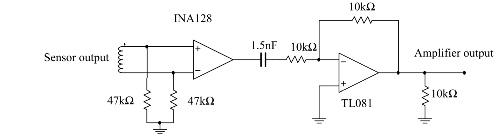

Sensor Amplifier¶
The signal induced on the sensor coil is very weak and requires amplification before further processing can be performed. Careful amplification is required in order to prevent loading and distortion of the sensor signal which would degrade the system performace. An instrumentation amplifier based design is used. A diagram of the circuit schematic is shown below:
{kind=link}
The INA128 is a general purpose instrumentation amplifier from Texas Instruments. The datasheet for the IC can be found 1. The sensor wires are directly connected to the inputs of the INA128. The gain of the amplifier is set using a \(10k\Omega\) potentiometer \(R_g\) (not shown). The \(47k\Omega\) resistors at the op-amp inputs are necessary in order to provide the necessary bias currents to the amplifier.
The TL081 2 is a general purpose operational amplifier configured as an inverting unity gain buffer using two \(10k\Omega\) resistors. The precision of these resistors is not important as the device is a simple buffer. The output of this buffer is connected to the data acquisition unit (DAQ).
The Eagle PCB project files and Gerber CAM files for this circuit can be found in the Anser project repository.